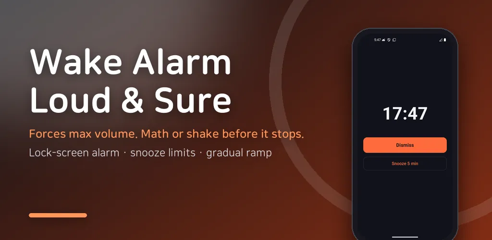
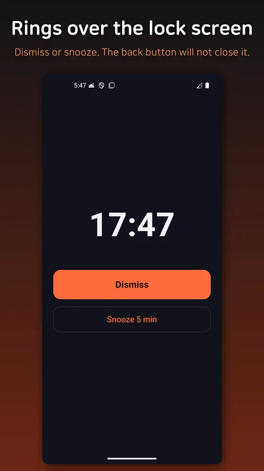
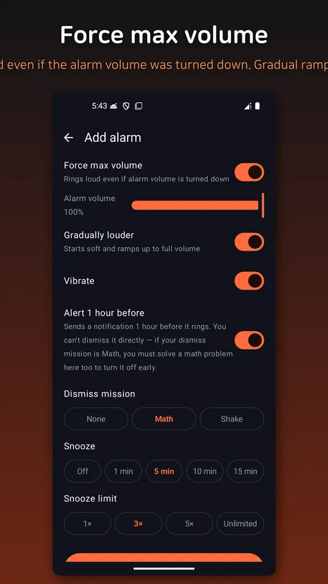
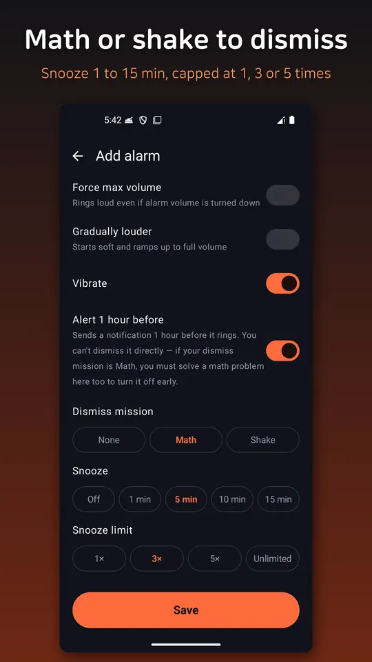
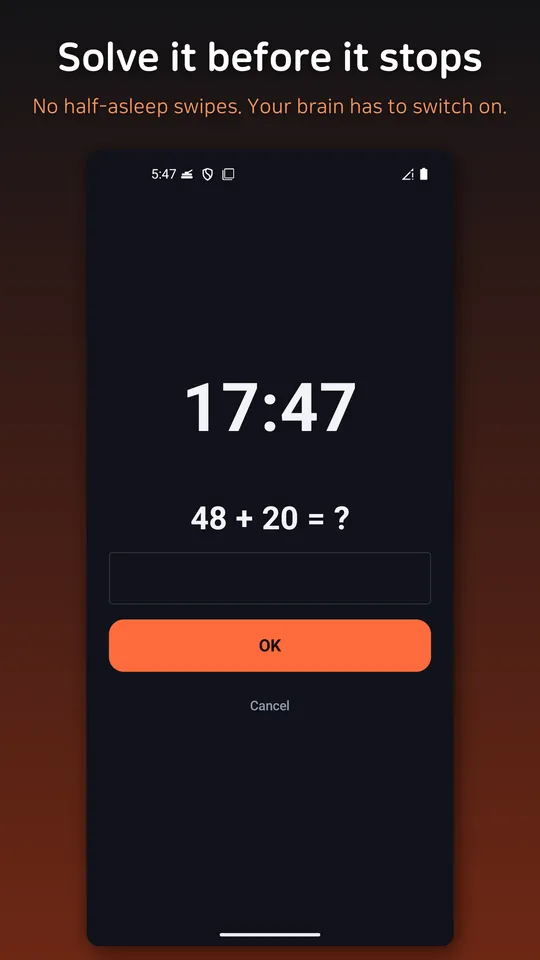
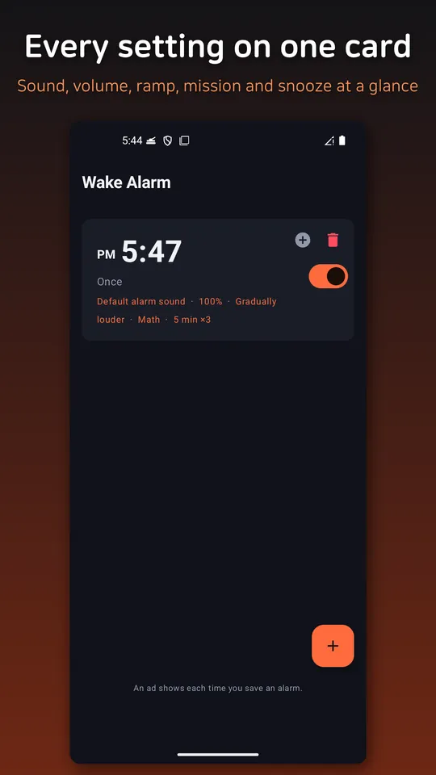

Loud Alarm Clock: Silent Mode
Loud alarm clock that rings in silent, vibrate and DND. Boosts volume too.






About this app
Ever slept through your alarm because your phone was on silent, on vibrate, or the alarm volume was turned down? Wake Alarm makes sure your alarm rings loud — with sound and vibration — no matter what state your phone is in.
What it does
- Rings out loud in silent & vibrate mode — The alarm plays on the dedicated alarm channel, so it still makes sound even when your phone is silenced or set to vibrate only.
- Force-boosts the volume if you turned it down — Right before it rings, the app automatically raises the alarm volume to maximum, then restores your original setting when the alarm ends. Even if you lowered the volume last night, it wakes you loud.
- Shows up over the lock screen — The dismiss/snooze screen appears right on top of your lock screen, even while the phone is locked.
- Do-Not-Disturb bypass (optional) — Grant notification policy access once, and you can let the alarm ring even in Do-Not-Disturb mode.
Features that make sure you're up
- Gradually rising volume — Starts quiet and gets louder over time.
- Mission to dismiss — Solve a math problem or shake the phone to turn the alarm off, so you can't just tap it and fall back asleep.
- Snooze & weekday repeat — Repeat on the days you choose, with adjustable snooze intervals.
Clean and lightweight
- No sign-up, no login. All alarms are stored only on your device.
- Works fully offline (internet is used only to show ads). No personal data collection.
- Alarms re-arm automatically after you restart your phone.
- Depending on your device maker, OS version, and battery-saver settings, some behavior (such as Do-Not-Disturb bypass) may require you to grant additional permissions.*
Android · free with ads · Developer: RealTunaLove · Store listing in 17 languages
Background story: why I built it